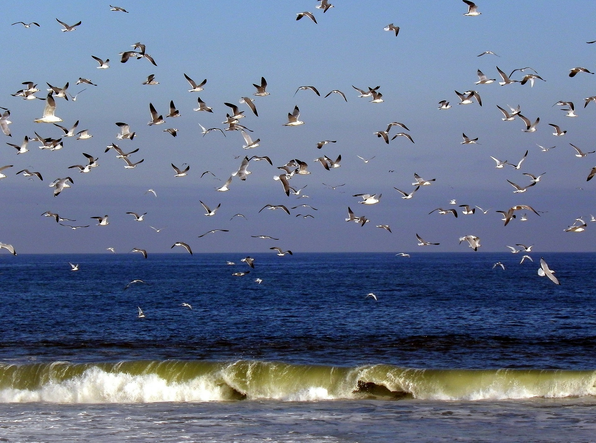

Where to Visit
The beaches along the east coast of New Jersey have so much to offer. Every summer, these beaches host thousands of vacationers and tourists, offering them amazing cuisine, fun activites, and beautiful weather.

Point Pleasant
Located in Ocean County, Point Pleasant is one of the most family-friendly vacation spots in New Jersey. With numerous motels, Jenkinson's Boardwalk and Aquarium, and many tasty ice cream parlors, Point Pleasant is the perfect place for adults to relax with their young children.
Lavallette
Only 10 miles south of Point Pleasant, Lavallette offers visitors a more upscale beach town. The downtown area features higher end stores, including Island Gypsy and Shaded Vision, delicious Italian food, and many mini golf courses.
Seaside Heights
A short drive south of Lavallette will lead you to the party town of Seaside Heights. Most known for being the setting of the hit MTV show, The Jersey Shore, Seaside Heights draws party animals from all over the tristate area.